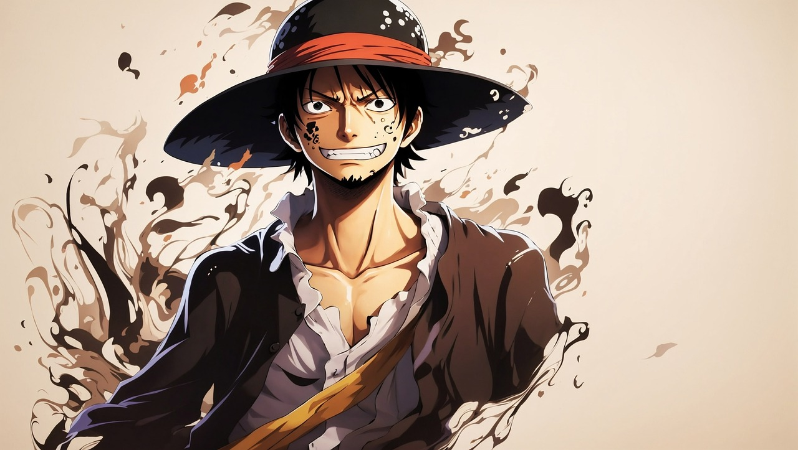
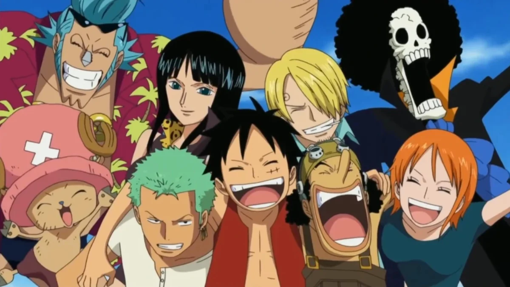

ONE PIECE
One piece is a manga series where a little boy Luffy wants be the king of pirates.His journey begins when he eats a devil fruit which gives him powers to be uot of ruber , but he cant learn to swim.

This is Luffy.He is very funny and likes eating a lot of food.He is very passionate about becoming a pirate king.He always wears a straw hat that his friend red haired Shanks gave him.He promised to him to be the pirate king and meet him in The Danger Zone.
PIRATE CREW
Straw Hat Luffy cant get the One Piece treasure all by himself, so he starts making a pirate crew that will support him in battle.He finds a total of eight great fighters to go with him on this journey.
- These are the eight fighters he finds:
- Zoro Rononoa
- Nami
- Usop
- Sanji
- Tony Tony Chopper
- Nico Robin
- Franky
- Brook
| Zoro Rononoa | When Luffy meet him,he was tied up by marines.Luffy helped him and he agreed to be his sidekick. |
| Nami | Luffy and Zoro went to a ocuppied city.They meet Nami who was stealing from that bad pirate.The almighty duo defeated the pirates and Nami became their helmsman. |
| Usop | Luffy, Zoro and Nami starter sailing the seas right away.They needed a break so they stopped at a village to rest a bit.There they meet Usop and helped him defeat a pirate in disguise, Krahador. |
| Sanji | The crew ate the food pretty fast so they stopped at sea restaurant and meet a cook, Sanji.He became their cook for the rest of the journey. |
| Tony Tony Chopper | After Nami falls ill with an unknown disease, the Straw Hat Pirates travel to Drum Island in search of a doctor. The crew meets a bizarre talking reindeer named Tony Tony Chopper, who helps them fend off the country's former despot king Wapol after he returns to reclaim his throne. |
| Nico Robin | After escaping from the Marines, Nico Robin (Miss All Sunday) appears from inside of the Straw Hat Pirates' ship. She manages to persuade the crew to let her join because Luffy did not let her die back then. |
| Franky | Straw hat pirates find Franky on the Scrap Island and offer him help.He accepts and comes to be their helper. |
| Brook | Brook drifted alone in the Florian Triangle for 50 years, eventually meeting Luffy and serving as the Straw Hats' ally during the Thriller Bark Arc before officially joining the crew. His dream is to reunite with his old friend, Laboon, at Reverse Mountain, where he resides with Crocus. |